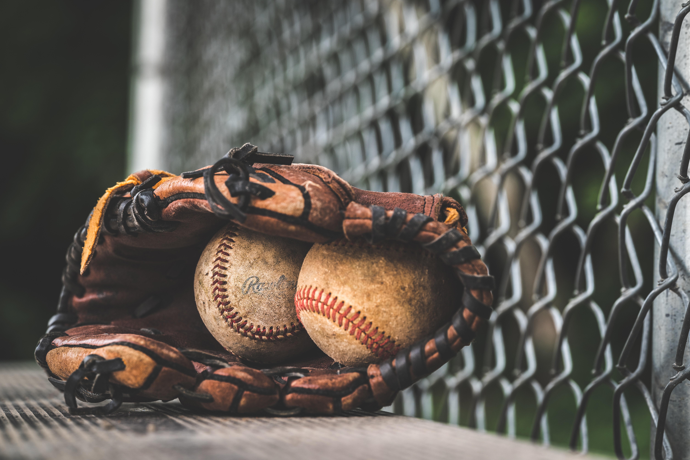

Softball
Softball is a game similar to baseball played with a larger ball on a smaller field. Softball is played competitively at club levels, the college level, and the professional level. The game was first created in 1887 in Chicago by George Hancock. It is also a bat-and-ball sport played between two teams of 9 players.
Read More

Role model
Jocelyn Alo Pumehana Alo is an American former college softball player for the Oklahoma Sooners. As a freshman in 2018, she was named NFCA National Freshman of the Year, and named USA Softball Collegiate Player of the Year in 2021 and 2022. She is the NCAA Division career leader in home runs.
THANKS FOR THE SERVICE